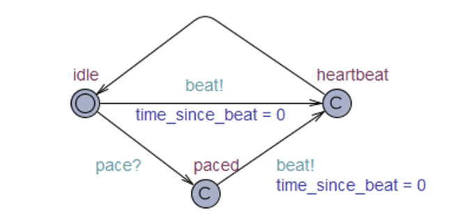
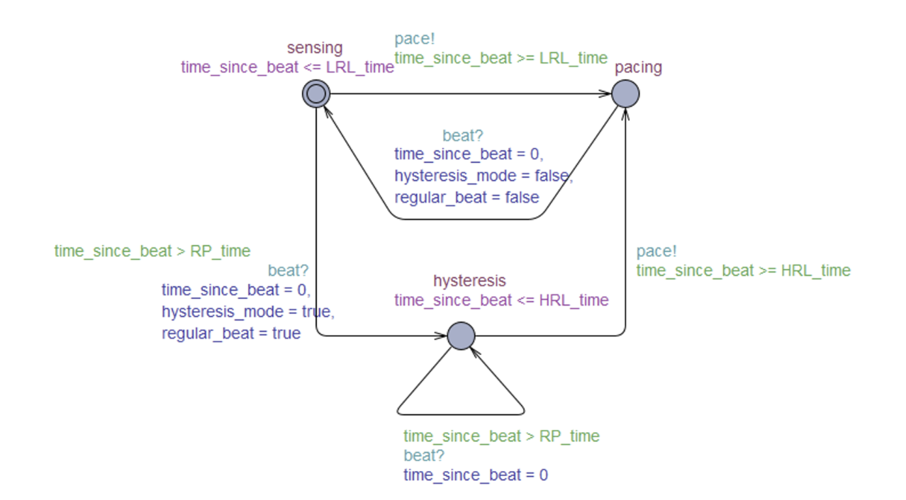
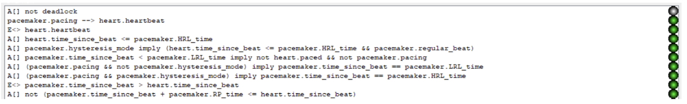

PaceMaker Controller
This project is inspired by the PaceMaker Challenge specified by the UPenn Real Time Systems Group. The goal of this project is to implement a pacemaker controller that satisfies the requirements specified by Boston Scientific, the vendor of the paceMaker. I worked with a group of 3 and followed the model-driven development process to implement the controller and formally verify the model using UPPAAL, a state-of-art model verification tool. Finally, we also enbaled users to monitor the heart rate and interact with our controller using ThingsBoard through MQTT.
This project consists of 3 parts:
- Simulated Heart: generating a simulated heart signal with random chance of heart failure
- PaceMaker: Send a pace signal to heart when detecting heart failure. Communicate with ThingsBoard using TSL/SSL secured MQTT
- Verification: Build logical models of heart and paceMaker, and verify their correctness using UPPAAL
Random Heart Signal Generator
The Random Heart Signal Generator is implemented on an Arduino Nano 33 IoT board. It generates heart signals (P,Q,R,S,T) with a random chance of heart failure and extra signals during refractory period. The signal is sent to the paceMaker through UART.
This generater is implemented using a finite state machine. The state machine has 7 states: IDLE, P, Q, R, S, T, ExtraR. The IDLE state is the initial state and it selects a random time between 0.5s and 3s to take transition to the P state. The P, Q, R, S, T states generate different wavelets as specified in requirements. After T state, it will select randomly with a chance of 80% to go back to IDLE state and a 20% chance to go to an extra R state which simulates the R wave within VRP. If the random heart receives a pace signal at any state, it will force restart immediately from P state. At each state, it updates the heart volt using a triangular wave formula (see Figure 3) and sends it to the pacemaker at 100 Hz.
PaceMaker
The PaceMaker is implemented on an Arduino Nano 33 IoT board. It receives heart signals from the Random Heart Signal Generator, and sends a pace signal at appropriate time (specified by VVI mode operation). It also communicates with ThingsBoard using MQTT to send heart rate and receive user commands. All data transferred between the paceMaker and ThingsBoard are encrypted using SSL.
The Pacemaker is implemented using 2 threads. The first thread listens to the heart volts at 50 Hz and measures the R-R intervals from peak to peak. It ignores the R wave within VRP, and sends a pace signal to the random heart if the next R wave is not detected within 1.5s (defined by LRL). If a natural R wave is detected within 1.5s, it switches to hysteresis mode and changes the heart rate limit to 2s (defined by HRL). So it will not pace unless the next R wave is not detected within 2s. Once it paces, the heart rate limit is switched back to 1.5s. The second thread communicates with thingsboard at a frequency of 67 Hz. It sends the detected heart volts and pace signals sent to the thingsboard using MQTT. And it listens to commands from thingsboard which include change of parameters (HRL, LRL, VRP, URL) and turn on/off the pacemaker. We use semaphores when reading and changing the parameters to ensure mutual exclusion.
Model Verification
We built models of the heart and pacemaker using UPPAAL. And we use query languages in UPPAAL to verify that our models meet the requirements. To ensure reliability, we need to use this model checker to verify that PaceMaker will always pace at the right time.
  